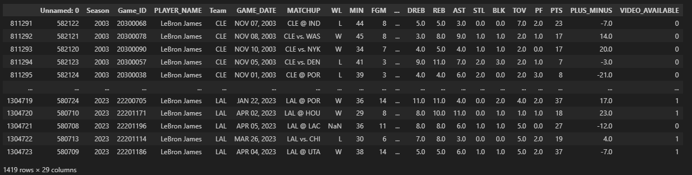
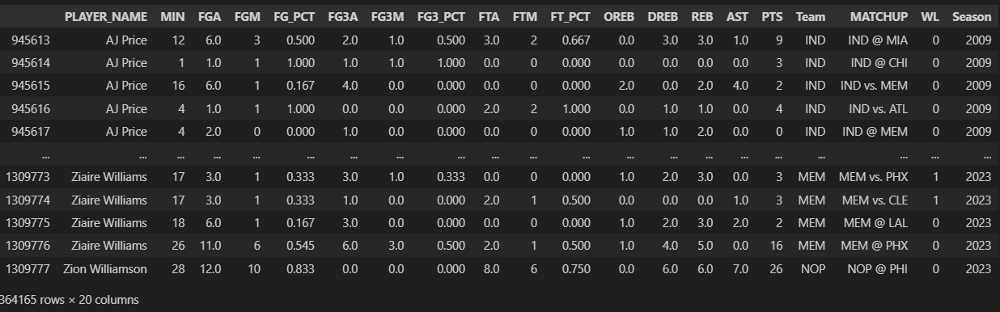
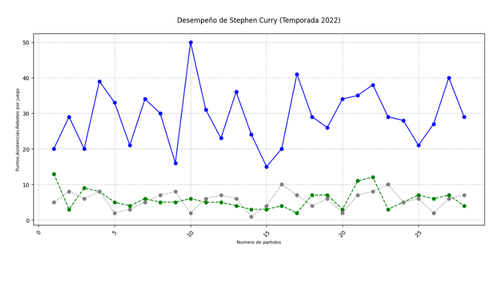
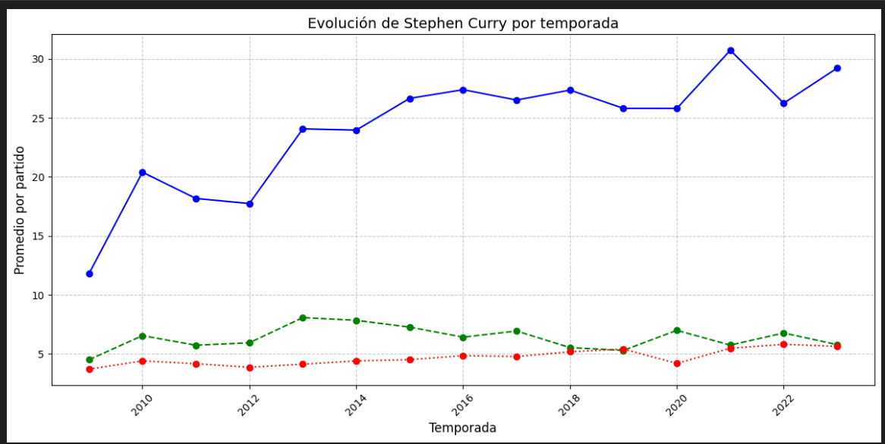
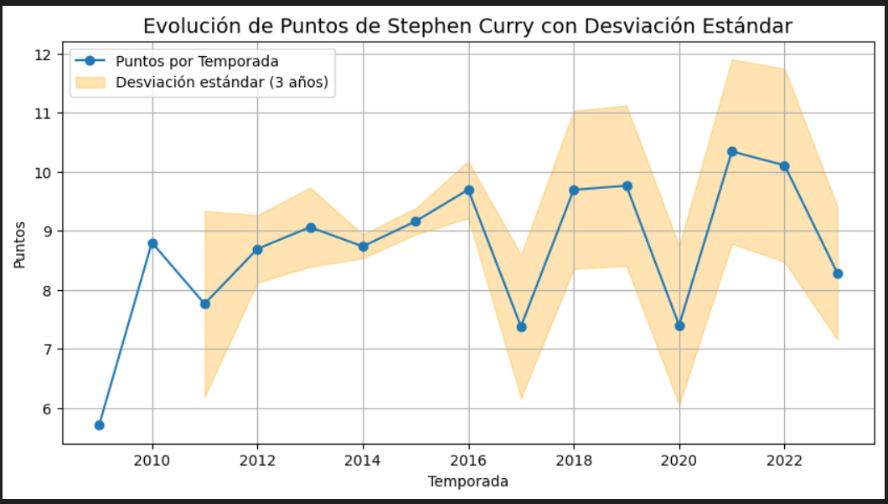
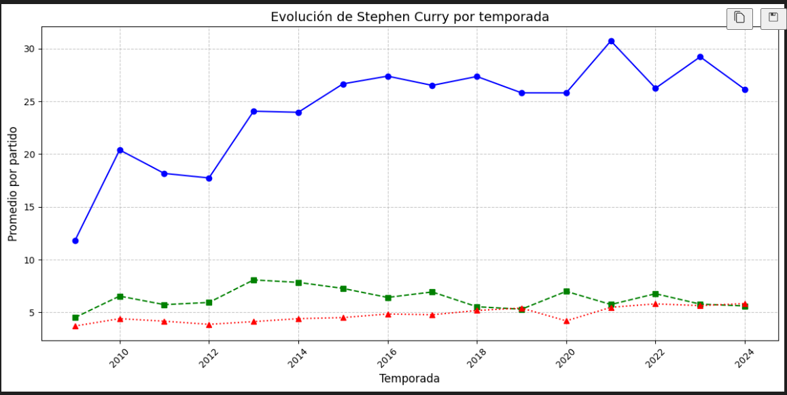
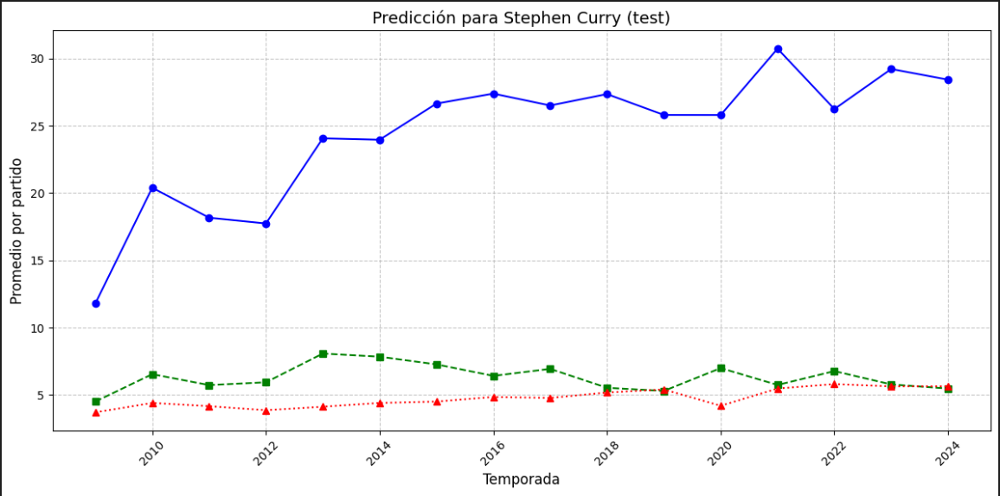
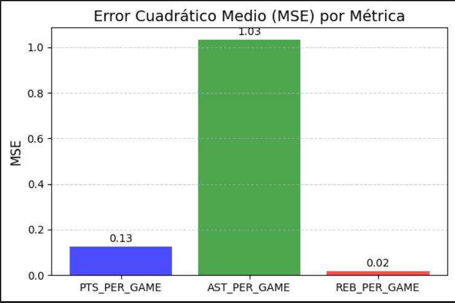

Proyectos
Modelos de predicción
Modelos de analísis
Sociales
Modelo de predicción
Stat Lab
Como parte de la materia Programación para ciencia de datos el profesor Mario dejo un proyecto para Ciencia de Datos y coloco los siguietes requerimentos: 1. Se realice un analisis de datos de un conjunto de datos. 2. Tema libre. 3. Se realice una predicción de un conjunto de datos. Debido decidi crear un programa llamado The Sixth StatMan dentro de un programa llamado Stat Lab, the sixth statman tiene como objetivo realizar una proyección de la cantidad de puntos, asistencias y rebotes que hace un jugador de la NBA por temporada. El motivo de crear este programa es aprovechar el crecimiento del mundo de las apuestas ya que expertos dicen que para 2024 tiene un valor de USD 17.94 billion y prospectan un crecimiento de 10.9% entre 2025 y 2030(https://www.grandviewresearch.com/industry-analysis/us-sports-betting-market-report). Para este programa utilice las librerias de Pandas, Scikit-Learn, Matlolib, NumPy y Seaborn, con las cuales pude raizar una regresión no lineal, basada en arboles de decisión ya que al solicitar distintas variables se convierte en multisalida lo cual se ajusta perfecto al modelo de arboles de decisión. Todos los datos con los que se realizo el estudio fueron de origen publico y consultados con mismos datos publicos.
Set de datos
El set de datos utilizado para este proyecto fue recuperado de un estudio realizado en kaggle, al observar el set de datos nos damos cuenta que contiene valores faltantes, nulos y en otro formato el cual no se ajusta al estudio que se quiere realizar. Ademas el set de datos es demasiado grande pues contiene datos desde 1950 hasta 2023.
NBA PLAYERS AND TEAM DATA

Limpieza y filtrado de datos
Despues de observar que el set de datos contenia valores nulos, faltantes y en otro formato, decidimos que lo mejor seria acortar el set de datos para tener datos mas actuales, relevantes y confiables, por ello hicimos un filtrado en el cual solo se seleccionaron las temporadas de 1990 a 2023, posterior a esto se seleccionaron las columnas adecuadas para el estudio como lo son:
- Nombre del jugador (PLAYER_NAME)
- Minutos jugados (MIN)
- Tiros de Campo intentados (FGA)
- Tiros de Campo anotados (FGM)
- Porcentaje de tiros de campo (FG_PCT)
- Triples intentados (FGA_3A)
- Triples anotados (FG_3M)
- Porcentaje de triples (FG3_PCT)
- Tiros libres intentados (FTA)
- Tiros libres anotados (FTM)
- Porcentaje de tiros libres (FT_PCT)
- Rebotes ofensivos (OREB)
- Rebotes defensivos (DREB)
- Rebotes totales (REB)
- Asistencias (AST)
- Robos (STL)
- Puntos (PTS)
- Equipo (Team)
- Enfrentamiento (MATCHUP)
- Resultado (WL)
- Temporada (Season)

Agrupamiento de datos
Una vez limpios y seguros de que se pueden utilizar los datos, agrupamos los datos por jugador en una temporada. Podemos observarlos en una gráfica de líneas para ver el comportamiento de cada jugador en una temporada.

Seleccionamos Stephen Curry y como podemos observar su temporada está llena de picos y caídas, por lo que una regresión lineal no sería del todo una buena idea.
Procesamiento de datos
Una vez que tenemos los datos agrupados podemos obtener los promedios de cada jugador en todas las estadísticas por temporada.

Calculamos la desviación estándar de cada estadística para ver qué tan dispersos están los datos de un jugador en específico. Por ejemplo: Stephen Curry, quien en 2023 tuvo una desviación estándar de más/menos 8.28 puntos y en 2022 tuvo una desviación estándar de más/menos 10.11 puntos.

Con esto podemos tener una idea aproximada de cuál será el promedio que hará en la temporada 2024.
Regresión no lineal (entrenamiento)
Ahora al tener los datos agrupados por jugador y temporada podemos realizar una regresión no lineal. Para ello dividimos el set de datos que usaremos para trabajar en dos partes: una será el set de entrenamiento y la otra será el set de prueba (20% prueba, 80% entrenamiento). Con esto podemos realizar una función de Random Forest Regressor con multisalida, la cual nos permite calcular los puntos, asistencias y rebotes al mismo tiempo, obteniendo así una respuesta más precisa y confiable.

En esta gráfica podemos observar el resultado del entrenamiento donde nos dice que para la temporada 2024 Stephen Curry tendrá un promedio de 26.1 puntos, 5.6 asistencias y 5.8 rebotes. Si comparamos con la realidad, podemos decir que es un muy buen resultado puesto que Curry para esa temporada promedió 26.4 puntos, 5.1 asistencias y 4.8 rebotes.
Regresión no lineal (prueba)
Ahora hacemos la función para la prueba y dentro de ella incluimos el error cuadrático medio para saber cuánto es que falla el resultado.

Podemos observar que los resultados de la prueba son muy similares a los resultados del entrenamiento, puesto que para los puntos predice 28.4, para las asistencias 5.5 y para los rebotes 5.7.
Ahora podemos observar la gráfica del error cuadrático medio, donde podemos ver que las asistencias tienen el error mayor mientras que los rebotes tienen el menor.

Si comparamos los resultados de la prueba con los resultados reales podemos ver que el error cuadrático medio mayor es el que más se acerca a la realidad mientras que el error cuadrático medio menor es el que más se aleja de la realidad.